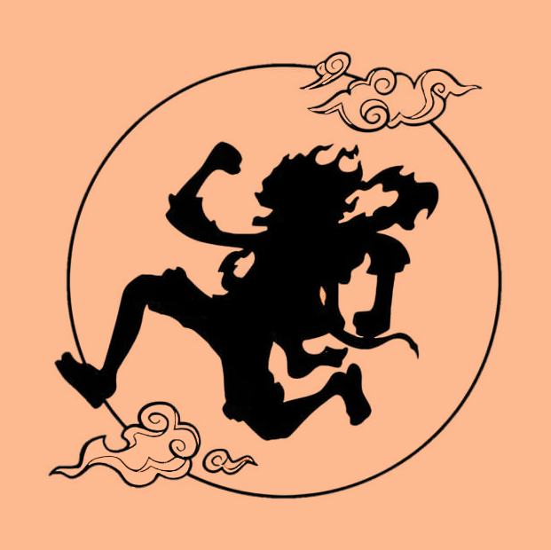

Home
Técnicas
Materiais
{{ conta }}
Opção 1
Opção 2
Opção 3
Lápis de Grafite (escala H, HB, B)
Lápis de Cor
Lápis Aquarelável
Tinta Aquarela
Tinta Gouache
Tinta acrílica
Tinta a óleo
Canetas Fineliners
Canetas de Gel
Marcadores (Copic, Promarker, etc.)
Lápis H (duros)
Lápis F (fino)
Lápis B (macios)
Lápis HB
Borracha Comum
Borracha Amassada
Borracha Elétrica
Pincéis para Aquarela
Pincéis Sintéticos para Acrílico
Pincéis de Detalhe
Canson
Papéis para Aquarela
Papel de Textura Fina:
Papel de Textura Rugosa:
Papéis para Pastel:
Papéis para Serigrafia:
+
×
Informações
+